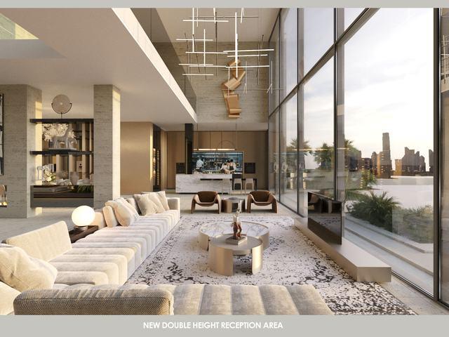
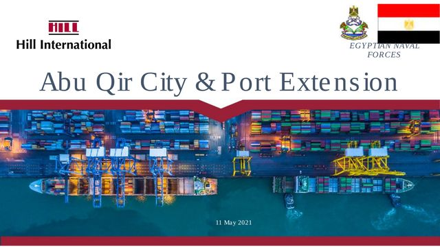

Urban and regional planning
We plan cities and regions: land use, mobility, infrastructure and growth, tied to national and local strategy. Examples: Egypt's North West Coast, Tanta, Mansoura and AlUla.
Where people live, work, learn and move is decided in the plan. PUD has helped make those decisions since 1966: regional plans for Egypt's North West Coast, city strategies for Tanta and Mansoura, rural settlement plans across Egypt and sub-regional plans on Saudi Arabia's Red Sea coast.
Our planning teams combine urban planners, architects, economists, sustainability experts and social scientists, built for each project. We start with stakeholder engagement and a close reading of the land, its history and its people, then build scenarios, land-use frameworks and phased delivery plans that clients can act on.
Streets, tunnels, stormwater, rail corridors and utilities decide how a city performs. PUD has taken part in the Jeddah stormwater drainage programme with AECOM Arabia, the feasibility and design of three tunnels under the Suez Canal, planning for the Saudi Railway Organization's land and property assets, and the Jazan city for primary and downstream industries.
What this covers
- Regional and sub-regional plans
- City strategies and structure plans
- Land use, mobility and infrastructure frameworks
- Housing and density frameworks
- Stakeholder engagement and scenario planning
- Rural and new-community planning
- Mobility and transport frameworks
- Stormwater and utilities planning
- Tunnels and corridors
Read the guide: What is urban planning?
Read the guide: What is master planning?
Selected projects
 AlUla Strategic Framework PlanAlUla · 2022
AlUla Strategic Framework PlanAlUla · 2022 Regional Vision for the North Coast and Tourism Development Master Plan for Fuka-MatrouhFuka-Matrouh sub-region, North Coast · 2011
Regional Vision for the North Coast and Tourism Development Master Plan for Fuka-MatrouhFuka-Matrouh sub-region, North Coast · 2011 Yanbu, Umluj, Al Wajh and Duba Sub-Regional Plan (YUWDDA)Yanbu, Umluj, Al Wajh and Duba (Red Sea coast) · 2025
Yanbu, Umluj, Al Wajh and Duba Sub-Regional Plan (YUWDDA)Yanbu, Umluj, Al Wajh and Duba (Red Sea coast) · 2025 Al Mashaaer Al Mugaddassah Master PlanMakkah (Mina, Muzdalifah, Arafat) · 2024-2025
Al Mashaaer Al Mugaddassah Master PlanMakkah (Mina, Muzdalifah, Arafat) · 2024-2025 Al Rabita Pre-Concept Design CompetitionMakkah · 2024
Al Rabita Pre-Concept Design CompetitionMakkah · 2024
Fawaz Alhokair Beachfront Residence, DubaiDubai · 2024 Fawaz Alhokair Estate, RiyadhRiyadh · 2024
Fawaz Alhokair Estate, RiyadhRiyadh · 2024 Architectural Design Guidelines for Najran and the Northern Border RegionNajran and the Northern Border Region · 2022
Architectural Design Guidelines for Najran and the Northern Border RegionNajran and the Northern Border Region · 2022
Abu Qir City and Port ExtensionAbu Qir, Alexandria · 2021 Gargoub New Port CityGargoub, Matrouh · 2021
Gargoub New Port CityGargoub, Matrouh · 2021 Heliopark Concept MasterplanNew Cairo · 2021
Heliopark Concept MasterplanNew Cairo · 2021 AlUla County Infrastructure Master PlanAlUla · 2019-2020
AlUla County Infrastructure Master PlanAlUla · 2019-202070 projects. Where we apply it:
Questions people ask
What does an urban and regional planning consultant do?
An urban and regional planning consultant helps governments, authorities and developers decide how land is used, how people and goods move and how a city or region grows. The result is a plan, strategy or framework a client can act on.
Has PUD prepared regional plans?
Yes. PUD planned Egypt's North West Coast in the late 1970s and early 1980s, prepared strategic plans for Tanta and Mansoura, and has advised on sub-regional plans for the Red Sea coast of Saudi Arabia.
Has PUD worked on infrastructure projects?
Yes. Examples are the Jeddah stormwater drainage programme, three tunnels under the Suez Canal, the Saudi Railway land and property strategy and Jazan city for primary and downstream industries.